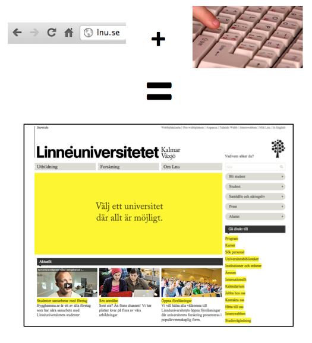

Webbteknik II
1DV449
Föreläsning 1

Linnéuniversitetet, HT2012

Detta verk är licensierat under en
Creative Commons Erkännande-IckeKommersiell-DelaLika 3.0 Unported Licens.
- Webben
- Uppkomst och utveckling
- HTTP
- Egenskaper
- TCP/IP
- Hur fungerar Internet?
Varför ska man kunna detta?
Historik, HTTP, TCP, IP...
Whatever?
Som webbutvecklare/programmerare är det viktigt att känna till den plattform vi arbetar med. Du kanske inte direkt behöver känna till hur webben uppkommst eller hur HTTP-protokollet fungerar när du följer en tutorial på nätet men för att få en djupare kunskap för webbprogrammering och hur man t.ex. opptimerar sina applikationer är denna kunskap viktig.
History
Inspirationen till webben skapades redan 1945. Det var precis efter andra världskriget
och forskaren Vannevar Bush beskrev vad han kallade Memex i sin skrift "As we may think".
Memex för ett förslag på en maskin där man kunde spara all sin information
(böcker, kommunikation, brev o.s.v.) och låta
"maskinen" hålla reda på detta och göra det presenterbart för användaren via
Denna skrift inspirerade många forskare i "computer science", bland annat gav denna maskin
inspiration till skapandet av den första datormusen. Men även idén med "hypertext"
och "hypermedia"
En som använde detta var Ted Nelson som först myntade uttrycket.
Mycket handlade om dokumenthantering och hur man skulle organisera detta.
Ted Nelsons forskning inspirerade i stor grad Tim Bernes-Lee som ses som
fadern till utvecklingen av den moderna webben med HTML som uppmärkning
av information.
Själv tycker han dock inte att webben i form av HTML
"HTML is precisely what we were trying to PREVENT— ever-breaking links,
links going outward only, quotes you can't follow to their origins,
no version management, no rights management"
http://xanadu.com.au/ted/TN/WRITINGS/TCOMPARADIGM/tedCompOneLiners.html
Tim Bernes-Lee jobbade på CERN med informationshantering och skrev
artiklen Information management: A proposal
"A web of nodes where user can browse at will"
Tim försökte sprida sina idéer bland cheferna i CERN men brukade få
svar som "interesting, but vague
1990 - Utvecklar en applikation World Wide Web
De tre grundbultarna i detta är URL/URI, HTML, HTTP.
Det har funnit flera olika varianter som hade kunnat bli "webben".
En av de största vid denna tiden var Gopher, ett list/menybaserat system med länkar till
olika typer av dokument. Gopher togs fram och drevs av University of Minnesota men 1993
bestämde man att ta ut en licenskostnad för användadet. Detta ledde i sin tur till att
Tim Barnes-Lee:s WWW blev bra mycket populärare då det var helt gratis och släppt med
öppen källkod"
Senare 1993 släpptes den första riktigt populära grafiska webbläsaren "Mosaic".
Detta gjorde att även allmänheten såg en större nytta med webben och fick fart på
utvecklingen.
History
Mosiacutvecklarna anställdes av Netscape och utvecklade där Netscape Navigator
Den webbläsare som hade störts inflytande när webben var ung. Samtidigt började
andra webbläsartillverkare röra på sig och början till det "browser war" vi känner
till startade. W3C skapades för att hålla koll på standarderna och jobba för
ett bättre helhetsgrepp på hur webben skulle fungera
Webben hade främst beståt av statiska html-sidor som länkade mellan varandra
men tekniker som kunde göra webben mer dynamiskt växte fram. Stöd för datalagraing i databaser
och tätare integration mellan webb och företagens övriga system.
XML togs fram som ett plattformsoberoende sätt att utbyta information via
Internet.
JSON växte fram som ett mer utvecklarvänligt och enklare format för datautbyte
via webben.
Web 2.0 innebar en mer användergenererad webb. Utvecklingen skedde på gräsrotsnivå
och många nya tekniker (programmerinsgspråk, ramverk, tekniska lösningar) togs fram och
drev webben ytterligare vidare. Många av de idag självklara tjänster skapades och gav
webben en starkare plats i människornas liv. Information utbyts och diskuteras på
bloggar, tweets m.m.
History
2007 släppte den första iPhonen och trots att det funnits surfmöjligheter
på handhållna enheter var det ändå starten för smartphones och den mobila webben.
Android följde och mängder av telefoner och tekniker som responsive design
följde. Man börjar samtidigt få flera typer av enheter, TV-apparater där man
försöker använda en plattform och får en webb att fungera överallt.
Framtiden är alltid svår att sia om. Något som pratas om i forskarvärden
är begrepp som Semantic Web och Linked Data. Semantiska webben är egentligen
ett gammalt uttryck...kanske till och med utopi. Tanken är att man vill göra
webben och all dess information tillgänglig för applikationer på ett bättre sätt.
The Web as I envisaged it,
we have not seen it yet.
The future is still so much
bigger than the past.Tim Bernes-Lee, 2009
Ingen vet vad framtiden har att ge. Men skaparen av webben har i alla fall stora idéer :)
URL:er och HTML hoppas jag ni känner till väl sedan tidigare. I denna kursen kommer vi grotta ner oss lite i HTTP.
HTTP
HTTP är ett applikationsprotokoll utvecklat för TCP/IP-stacken med en uppsättning regler för hur kommunikation mellan webbserver och webbklient ska ske...
Vad händer egentligen när vi skriver in en URL, trycker ENTER och får en HTML-sida tillbaka???

För oss som surfar kan ju ett webbplatsbesök te sig ganska simpelt! Faktum
är att det är mängder av tekniker, servrar, apparater, sladdar och gud vet vad inblandat.
En vanlig googlesökning kan i vissa fall passera genom tusentals servrar...
Hämta en webbsida - Vad händer?
- 1. Hitta adressen till webbservern i fråga
- 2. Hitta vägen till webbservern över Internet
- 3. Ansluta till webbservern och få en garanterad "säker" transport
- 4. Få HTML skickad till webbläsaren via HTTP

Protokollstack, många protokoll (samling regler)
Grunden för all kommunikation på nätet
Byta ut olika nivåer
Paketbaserad
Ta olika vägar för att komma fram
TCP/IP är grunden för all kommunikation över Internet. Det är en så kallad protokollstack
och innehåller mängder av olika protokoll för olika typer av tillämpningar.
De olika nivåerna i stacken är separerade från varandra så att man enkelt kan bygga på del
och del. TCP/IP delar upp all trafik i mindre paket för att enklare kunna skicka
dessa över Internet. Varje lager i TCP/IP-modellen lägger på sin information på paketet
och tar också hand om det på andra sidan.
Internet
Internet består av miljontals servrar, routrar osv
Trafiken kan ta olika vägar - Beroende på tillgänglighet, prestanda m.m. Det var själva
tanken med Internet. Går en väg ner ska trafiken alltid kunna ta en annan.
Applikationer på internet - FTP, E-post, BitTorrent, Webben
1. Hitta adressen till webbläsaren
Vi gillar domännamn
www.lnu.se
Datorer gillar IP-adresser
194.173.221.1
2001:0db8:85a3:0000:0000:8a2e:0370:7334
På något sätt måste det finnas ett system för möjligheten att översätta IPnummer till domännamn och vice versa...
Domain Name System
Översätt IP till domnnamn och vice versa
DNS systemet är centralstyrt system och högst upp i hierarkin finns 13 stycken root servrar.
De flesta uppslag vi gör hamnar dock på en betydligt närmare DNS-server än så då det finns
massor av namnservrar som kopierar ner listor med uppslag så att man kan minska
anropens längd. Du har även en DNS cache i din lokala dator, både i operativsystemet
och i webbläsaren.
DNS-servrarna kommunicerar med varandra internt för att hela tiden försöka ha den senaste
listan. Om du någon gång pekat om en server och uppdaterats dess DNS register vet du att
det kan ta en stund innan DNS:en har pekats om, anledning är just att det finns en viss
fördröjning innan all information spridits.
2. Vi vet IP, hur hittar vi servern?
Internets routrar och IP-protokollet
När vi vet IP-numret till den server vi ska ansluta till kommer
IP-protokollet och alla miljontals routrar som finns på nätet väl till
plats. En router känner till många andra routrar som ligger ute på nätet
och kan med hjälp av smarta algoritmer och en specifik routingtabell ta reda på hur
paketen ska skickas vidare för att på bästa sätt hamna hor mottagaren.
Vad händer med ett paket som försöks skickas till endress som ingen svarar på?
TTL (tim-to-Live)
3. Vi vet att vi kommer hitta servern.
Hur ansluter vi?
TCP är ett transportprotokoll vars uppgift är att se till att
alla paket verkligen kommer fram. TCP ansvarar också för anslutningen till
servern vi vill prata med. Man brukar tala om att man ansluter på olika portar
En webbserver lyssnar (som standard) på portarna (80 och 443 - https)
För varje anslutning till en server genomför TCP en så kallad handskakning
(3-way handshake). Klienten skickar en anslutningsförfrågan till servern, servern
svarar med ett OK (ACK) och ett synkroniseringsnummber och klienten skickar tillbaka
ett OK och anslutningen är nu upprättad.
UDP är ett annat transportprotokoll. Det är snabbare men har ingen kontroll
på att allt kommer fram. UDP brukar användas t.ex. vid videoströmmar där man
hellre tar en snabb koppling än att man tappar någon frame då och då.
4. Skicka informationen - HTTP
HTTP är det vi ska gå lite djupare in i denna kurs och titta på mer i detalj vad som finns i det protokollet och vad som är viktigt för oss webbutvecklare.
Protokollstack, många protokoll (samling regler)
Grunden för all kommunikation på nätet
Byta ut olika nivåer
Paketbaserad
Ta olika vägar för att komma fram
TCP/IP är grunden för all kommunikation över Internet. Det är en så kallad protokollstack
och innehåller mängder av olika protokoll för olika typer av tillämpningar.
De olika nivåerna i stacken är separerade från varandra så att man enkelt kan bygga på del
och del. TCP/IP delar upp all trafik i mindre paket för att enklare kunna skicka
dessa över Internet. Varje lager i TCP/IP-modellen lägger på sin information på paketet
och tar också hand om det på andra sidan.
Att det fungerar så bra!
CC-licenced from The opte project
Hur kan detta fungera så bra?
Cachning, skalbar teknik, snabbare bandbredd.